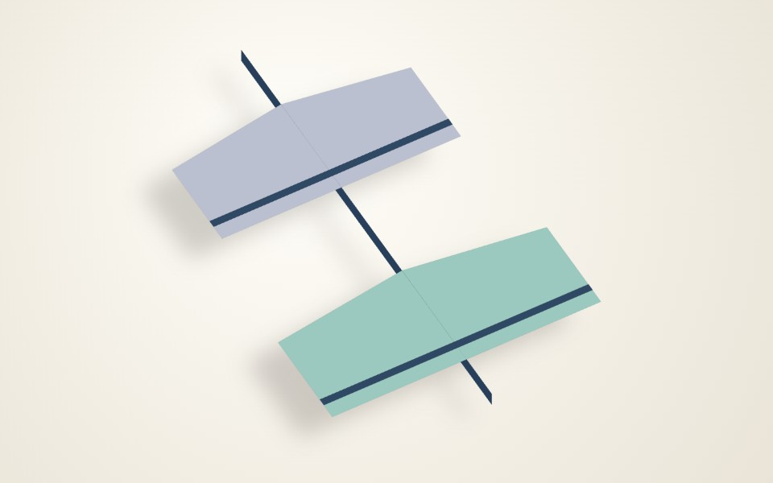

Glide
Ring glider
The folds put more paper in the front rim. The curved sheet forms a wing around an opening. Changing the overlap changes both diameter and seam stiffness.
- Rim fold
- 13 mm
- Folds at rim
- 2

Motion illustration
What you need
One plain sheet, a ruler and room for a gentle toss. Start with US Letter. A4 is a second shape to try.
Print the pattern
Print at 100% (Actual size) and check the 50 mm scale on the sheet with a ruler.
Try this flight test
Measure across the opening. Try five level tosses and mark the first landing of each. Tuck the ends a little farther in, measure again and repeat from the same spot.
Make it
- Lay the sheet sideways. Fold along the diagonal between opposite corners. The other two corners form two separate peaks.
- Keep the long folded edge near you. Fold a strip about 13 mm wide up over it. Roll it up once more by the same width.
- Bend that thick edge into a circle. Slip one end inside the folded pocket at the other end. Look through the open ring.
- Pinch the dip between the peaks. Point the thick rim forward and give the glider a gentle, level toss.
If the ends slip apart, tuck them deeper. Keep the same fastening for both sets.
See the other models
-

Maple spinner
Spin
-

Williams tandem glider
Glide